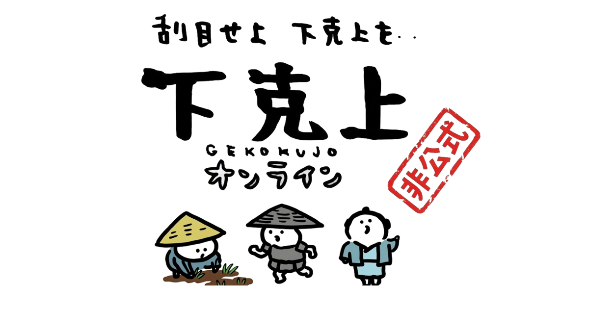
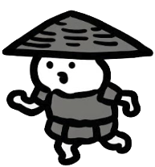
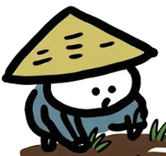
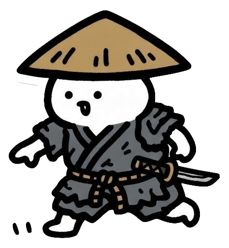
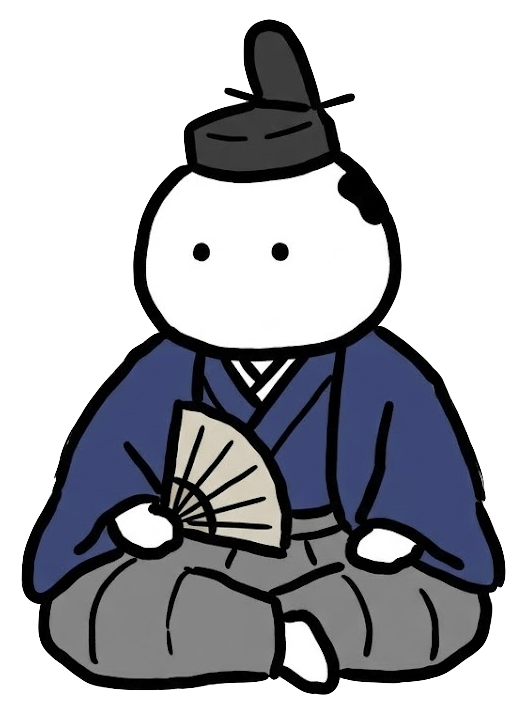
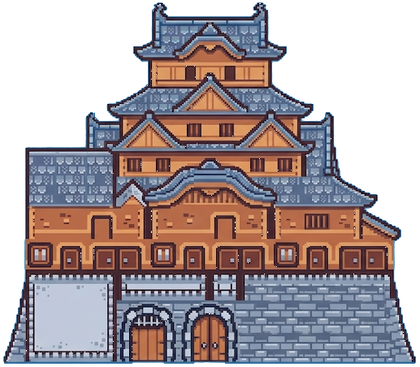

身分と仲間

足軽
入門
強く広範囲な攻撃ができる
民衆は時間で離脱していく
民衆は時間で離脱していく
商人
戦略
民衆を自動で雇う
攻撃は控えめだが足が速い
攻撃は控えめだが足が速い
農民
高難易度
民衆が多いほど強くなる。
一揆に参加するを選ぶと…
必殺技で画面中の敵が全滅！ ただし民衆が半分いなくなる

民衆 近づくと仲間になる。多いほど攻撃力アップ!
敵を知れ

通常敵
時間が経つほど強い敵が出てくる
辻斬り
橋を守るやつ — 力で倒して先に進め
突然現れるやつ — タイミング良く撃退しないと即死！
撃退に成功するとたくさん石高が手に入る

殿様
城門が出現したら突入! とにかくタフだが、倒せば下克上達成!
操作
W A S D
移動
SPACE
辻斬りを撃退
左クリック
攻撃
右クリック
民衆で突撃
Q
一揆（農民のみ）
遊び方
一
民衆を集めて攻撃力を上げろ
▼
二
敵を倒して石高を稼げ
▼
三

城の殿様を倒せば…下克上!いざ、出陣
下克上を果たせ!
城を目指し、殿様を倒して天下を取れ
身分を選べ
まずはコレ！
足軽（あしがる）
5方向の弾幕で敵をなぎ倒せ
攻撃力
★★★★★
機動力
★★★☆☆
成長力
★☆☆☆☆
経済力
★☆☆☆☆
お金で解決！
石高×1.2
商人（あきんど）
金の力で最強軍団を即編成
攻撃力
★☆☆☆☆
機動力
★★★★☆
成長力
★★☆☆☆
経済力
★★★★★
最強スコア狙い
石高×1.4
農民（ひゃくしょう）
最弱から始まる大逆転劇
攻撃力
★★☆☆☆
機動力
★★★☆☆
成長力
★★★★★
経済力
★☆☆☆☆
💀
下克上失敗.....
一揆に参加する？

遊び方
W A S D移動
左クリック攻撃
右クリック仲間突撃
SPACE辻斬り回避
Q一揆発動（農民・一揆モードのみ）
目的
フィールドの民衆を味方にし、敵を倒して石高を稼ごう。
城に向かい、殿様を倒せば「下克上」達成！
ヒント
民衆に近づくと仲間になる。仲間が多いほどスコア倍率UP。
画面の赤い矢印が城の方向を示している。
クレジット
ゲームデザイン・プログラム
Claude Code
BGM
8bit三味線サムライロック - MOMIZizm MUSiC（もみじば）｜フリーBGM
※本作はファンメイド作品です
v1.0 2026/03/16